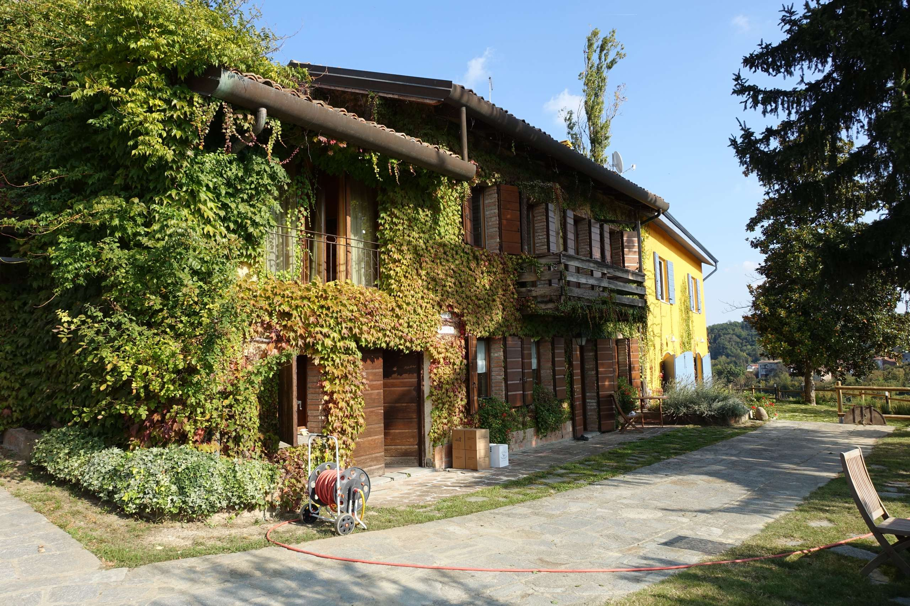

€750.000
Fontanile · Piedmont · Italy
UNESCO Monferrato compound that punches hard at €750k: restored beam-character cascina, working winery, two turnkey guest apartments and a private in-ground pool suspended over Barbera/Moscato/Dolcetto vines — rare residence + hospitality + production under the cap.
Opened 16 Sep 2026 on Selected Homes Piemonte; asking €750.000; Property Size 550 m² / land 28,000 m² listed on page; bedroom/bath counts not explicit — estimated ~6 bed / ~4 bath from main cascina + two guest apartments; swimming-pool feature + body-confirmed in-ground pool; For Sale (not Sold/Under Offer). Address Fontanile, Asti, 14044.
Open the listing